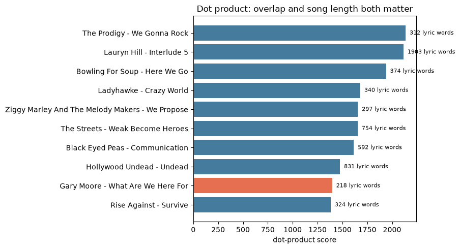
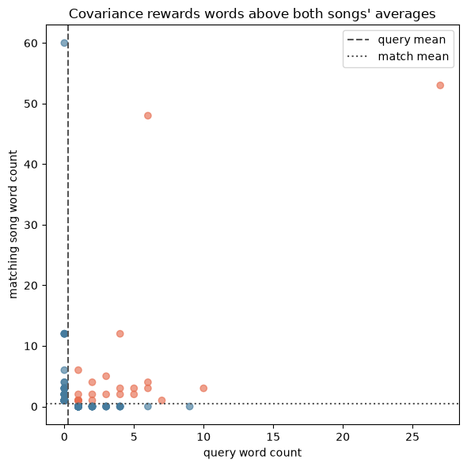
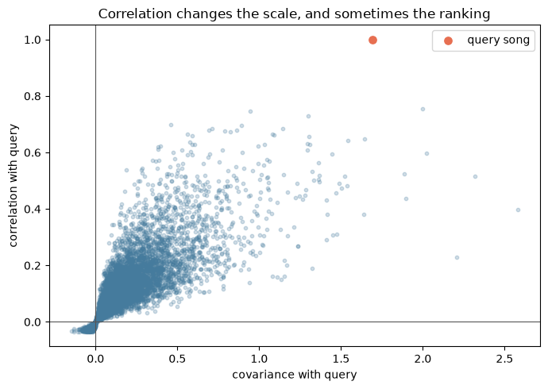

Spotify Lab: Vectors, Inner Products, and Similar Songs
Name(s): Lukas Vrouwenvelder
You are a new data engineer at Spotify.
When a listener asks for songs with similar content, we want to query the library of music and select appropriate recommendations.
Every song is represented as a vector, and we are using a vector database: Each song is encoded as a vector of word counts. So if “love” appears 12 times in the song, the “love” coordinate is \(x_{\text{love}}=12\). If Metallica writes songs about topics that are more similar to Black Sabbath than to Josh Groban, then the vector representations of their songs will have more similar profiles, and we should suggest Black Sabbath over Josh Groban. This approach is fundamental to technologies like LLMs or facial recognition, which store documents and faces as vectors and conducts fast look-ups using the kinds of math we’ll look at in this lab.
artist_name, song_title, release: Artist, song, album
release_year, duration: `
artist_familiarity, artist_hotttnesss: Measures of ubiquity, popularity
genre, top_tags: Information about the song type
n_words, nnz_words, l2_norm: Number of total words in the song, number of non-zero word coordinates (i.e. number of unique words), and the word counts squared/summed/square-rooted.
is_test: Train-test split identification
800 columns of word counts
The top_40_songs_by_genre.csv file contains the top 40 songs by genre – rock, metal, pop, punk, country, r&b/soul, folk, hip hop, electronic, blues, jazz, reggae, latin, classical – by “hotttness”. We’ll use these songs to benchmark.
The vocabulary.csv file includes the 800 words that form the vector space in which the songs are modeled.
Each song becomes a vector of lyric-word counts, and then we use vector operations to quantify “similarity”.
The big goal of this lab is simple:
Vectors and inner products and vector length are the core tools of modern retrieval systems.
Lab Overview and Submission
Add your name to the top of this notebook and name anyone you worked closely with. Add this notebook to a personal GitHub repository and submit the repository link in Canvas. Every group member should be able to explain the code and conclusions in the submitted work.
The goal of this lab is to use vectors and inner products to build, inspect, and critique a small song-recommendation system. You will represent songs using lyric word counts, compare several measures of similarity, and decide which measure produces the most useful recommendations.
Part 1: Basic Similarity Measures
Complete the steps in this notebook. For each method, run the code, inspect the rankings and plots, and respond to the yellow prompts in your own words. Explain what the score measures, how the top matches change, and whether the method is rewarding genuine lyric similarity, song length, or some other pattern.
Part 2: Recommendation Logic
Use cosine similarity to build the final 10-song recommendation list after excluding the query song itself. Evaluate that choice against the dot-product ranking. Identify at least two specific songs that illustrate an important difference between the rankings, and explain what that difference reveals about the two scoring rules.
Short Written Explanation
At the end of this notebook, write a 2-4 paragraph response. State which similarity measure you would recommend Spotify use for this lyric-only prototype, justify your choice with results from your analysis, and discuss at least two concrete examples from the rankings. Briefly note one important limitation of lyric word counts alone and name information that could make a real recommendation system better.
Your completed submission should include this notebook with all code executed, outputs visible, and written responses included.
Setup
We will use:
./data/song_vectors.csv.gz: one row per song
./data/vocabulary.csv: the word columns used in the song vectors
import matplotlib.pyplot as pltimport numpy as npimport pandas as pdsongs = pd.read_csv( "./data/song_vectors.csv.gz" )vocab = pd.read_csv( "./data/vocabulary.csv" )top_40 = pd.read_csv("./data/top_40_songs_by_genre.csv")word_cols = vocab["word"].tolist() # Song count matrixmeta_cols = songs.columns.drop(word_cols).tolist() # Information about tracksprint('Number of songs, number of words:', songs.shape)print( 'Song metadata fields:', meta_cols[:8])
Number of songs, number of words: (8000, 816)
Song metadata fields: ['track_id', 'song_id', 'artist_id', 'artist_name', 'song_title', 'release', 'release_year', 'duration']
songs[meta_cols].head()
track_id
song_id
artist_id
artist_name
song_title
release
release_year
duration
artist_familiarity
artist_hotttnesss
genre
top_tags
n_words
nnz_words
l2_norm
is_test
0
TRAAPIV128F1493132
SOJHKYL12A6D4FA0AC
AR56P361187B9AC4DB
Gary Moore
What Are We Here For
Dark Days In Paradise
1997
345.93914
0.761362
0.467111
blues
blues; classic rock; rock; hard rock; blues rock
218
80
37.376463
0
1
TRAAWOR128F92DF3C8
SOBJYXZ12A8AE45FF1
ARY80281187FB3E380
Sandi Thom
Wounded Hearts
The Pink & The Lily
2008
205.21751
0.655359
0.405031
blues
blues
287
103
39.698866
0
2
TRABNZS128F932C6E8
SOCOZZE12A813568F7
AROWOZ41187FB5B535
G. Love & Special Sauce
Willow Tree
Yeah_ It's That Easy
1997
206.57587
0.717235
0.548694
blues
blues; chill; alternative; rock; jazz
211
64
33.090784
0
3
TRABOIH128F9300B06
SOHYOTB12AF72AA1D7
AR94ZOI1187FB46BDA
Willie Dixon
That's My Baby
Very Best Of The Blues
1989
208.90077
0.579533
0.429834
blues
delta blues; BLUEZZZ; blues; freedom; Willie D...
164
76
27.477263
0
4
TRABYAR128F931B1A4
SOVKUOE12A58A8066E
AR7BMMV1187FB5B2D7
Robben Ford
Something For The Pain
Blue Moon
2002
298.37016
0.604820
0.383877
blues
blues; Robben Ford; vinnie colaiuta; jimmy earl
187
75
27.604347
0
Part 1: Similarity Measures for Song Vectors
The word-count columns are coordinates. That means each song is a vector in a high-dimensional space.
We will work with the song-by-word matrix \(X\), where each row is one song vector.
X = songs[word_cols].to_numpy(dtype=float)query_idx =0# Let's query the first songquery = X[query_idx]print( 'Track metadata: \n')print(songs.loc[query_idx, meta_cols])print( 'Track word counts: \n')print( query )
X #this is the song count matrix, with each row representing a song and each column representing a word in the vocabulary. The values in the matrix indicate the count of each word in the corresponding song.
# Let's see the counts for nonzero wordsnonzero = np.flatnonzero(query)pd.DataFrame({"word": np.array(word_cols)[nonzero], #this line "count": query[nonzero].astype(int),}).sort_values("count", ascending=False).head(15)
word
count
62
we
27
4
are
10
17
for
9
37
of
7
63
what
6
26
it
6
21
here
6
20
have
6
41
our
5
54
through
5
49
stay
4
40
or
4
43
right
4
19
get
4
36
must
4
Step 1: Dot Product
The dot product is our first similarity score:
\[
x \cdot y = \sum_{j=1}^m x_j y_j
\]
It gets large when two songs align count mass on the same words.
It also tends to go up for longer songs or songs with larger total counts, which is a choice we’ll have to think about.
# Compute the dot product between every song vector and the query vector.dot_scores = X @ querydot_results = songs[meta_cols].copy()dot_results["dot"] = dot_scoresdot_results.sort_values("dot", ascending=False).head(10)
track_id
song_id
artist_id
artist_name
song_title
release
release_year
duration
artist_familiarity
artist_hotttnesss
genre
top_tags
n_words
nnz_words
l2_norm
is_test
dot
1582
TRFSCLD12903CD213F
SOENGNL12AB018E1BD
AR4L4WQ1187FB51996
The Prodigy
We Gonna Rock
What Evil Lurks
1991
282.30485
0.638614
0.601436
electronic
Rave; big beat; jungle; electronic; techno
312
10
141.703917
0
2136.0
6290
TRFUJVJ128F426F2A2
SOONCPO12AF72A1986
AR8W8P31187B9A4063
Lauryn Hill
Interlude 5
MTV Unplugged No. 2.0
2002
734.48444
0.697206
0.580125
r&b/soul
ms hill; the realness; The Truth; true; rnb
1903
409
215.044182
0
2115.0
5601
TRCETEN128F42AD6D0
SOXSRBF12D021B1340
AR4KTMS1187B9B4873
Bowling For Soup
Here We Go
Goes To The Movies
2004
188.36853
0.790406
0.561934
punk
pop punk; The Good Stuff; Bowling For Soup; pr...
374
92
98.863542
0
1939.0
1930
TRWAMJL128F92D124B
SOUSJHY12A8C1457F0
ARQ85IK11C8A415C6A
Ladyhawke
Crazy World
Ladyhawke
2008
214.93506
0.692569
0.554471
electronic
electropop; indie; female vocalists; electroni...
340
58
74.229374
0
1680.0
6997
TRLDRZN128F4288F63
SOBLSVV12A8C13E4F8
ARLUAK21187B9B785A
Ziggy Marley And The Melody Makers
We Propose
Conscious Party
0
274.46812
0.750480
0.538491
reggae
reggae; marijuana; Reg-i-die
297
97
58.180753
0
1656.0
3053
TRTCOWO128F930C444
SONWWDY12A6D4F7FB1
ARIHE7O1187FB47DED
The Streets
Weak Become Heroes
Summer Sessions
0
494.54975
0.772909
0.527872
hip hop
british; Hip-Hop; garage; 00s; hip hop
754
262
96.337947
0
1654.0
2971
TRPDBLM128E0792367
SOZRPOY12A8C1455F5
ARTDQRC1187FB4EFD4
Black Eyed Peas
Communication
Behind The Front
1998
344.00608
0.845602
1.005942
hip hop
Hip-Hop; funk; dance; communication; heisse sc...
592
173
80.068720
0
1615.0
2874
TRKRVKD128F9327008
SOXKVEZ12AB01821F5
ARX94AN1187FB4B54B
Hollywood Undead
Undead
Desperate Measures
2008
288.07791
0.703476
0.576626
hip hop
rapcore; hollywood undead; rap metal; rock; un...
831
222
97.082439
0
1476.0
0
TRAAPIV128F1493132
SOJHKYL12A6D4FA0AC
AR56P361187B9AC4DB
Gary Moore
What Are We Here For
Dark Days In Paradise
1997
345.93914
0.761362
0.467111
blues
blues; classic rock; rock; hard rock; blues rock
218
80
37.376463
0
1397.0
5840
TRMGOLR128F933A7DB
SOYDERO12A6D4F72BC
ARZWK2R1187B98F09F
Rise Against
Survive
The Sufferer & The Witness
2006
221.46567
0.847082
0.625080
punk
punk rock; melodic hardcore; punk; rock; Rise ...
324
85
56.169387
0
1383.0
# Visual check: long songs can receive larger dot products.top_dot = dot_results.sort_values("dot", ascending=False).head(10).copy()top_dot["label"] = ( top_dot["artist_name"].fillna("") +" - "+ top_dot["song_title"].fillna(""))colors = ["#e76f51"if index == query_idx else"#457b9d"for index in top_dot.index]plt.figure(figsize=(9, 5))plt.barh(top_dot["label"], top_dot["dot"], color=colors)for position, words inenumerate(top_dot["n_words"]): plt.text(top_dot["dot"].iloc[position], position, f" {words:.0f} lyric words", va="center", fontsize=8)plt.gca().invert_yaxis()plt.xlabel("dot-product score")plt.title("Dot product: overlap and song length both matter")plt.tight_layout()plt.show()

Look at the top matches. Do they seem similar because they use similar words, because they are genuinely similar songs, or because the dot product is partly rewarding song size?
Adapt the above code chunks to find the top three non-self matches for all of the Top 40 songs by genre using the raw inner product. Before sorting, set the query song’s score to -np.inf. Save your results as additional columns in “./data/top_40_songs_by_genre_results.csv”.
TODO: no, not strong matches. Length big factor.
#pull all genres from 'genre' column in top_40 datasetgenres = top_40['genre'].unique()genres
# get user input for song index to queryquery_idx =int(input(f"Enter a song index to query (0-{len(songs)-1}): "))query = X[query_idx]# print(query_idx)# print(query)#compuye the dot product between every song vector and the query vector.dot_results['dot'] = X.dot(query) # replace with your actual similarity calc if it's not a plain dot product# exclude self from results without removing it from the original dot_results DataFrameresults_no_query = dot_results.drop(index=query_idx, errors='ignore')# group `dot_results` based on `genres` as a list of genres to filter the top_40 datasetdef get_top_songs_by_genre(genre, top_n=3):return ( results_no_query[results_no_query['genre'] == genre] .sort_values("dot", ascending=False) .head(top_n) )# use get_top_songs_by_genre to get the top 3 songs for each genre in the genres listtopThreeSongs = []for genre in genres: top_songs = get_top_songs_by_genre(genre, top_n=3) topThreeSongs.append(top_songs)topThreeSongs_df = pd.concat(topThreeSongs)topThreeSongs_df[['genre', 'artist_name', 'song_title', 'dot']]
---------------------------------------------------------------------------ValueError Traceback (most recent call last)
CellIn[10], line 2 1# get user input for song index to query----> 2 query_idx = int(input(f"Enter a song index to query (0-{len(songs)-1}): "))
3 query = X[query_idx]
4# print(query_idx) 5# print(query)ValueError: invalid literal for int() with base 10: ''
Step 2: Centering and Covariance
Now we subtract each vector’s own mean. This changes the question from “Do these songs use many of the same words?” to something closer to “Do these songs rise above and below their own average on the same words?”
# Visual check: centering moves each song's average word count to zero.comparison_idx = np.argsort(covariance_scores)[-2]comparison = X[comparison_idx]used_words = (query >0) | (comparison >0)both_above_average = (query > query.mean()) & (comparison > comparison.mean())plt.figure(figsize=(6, 6))plt.scatter(query[used_words], comparison[used_words], c=np.where(both_above_average[used_words], "#e76f51", "#457b9d"), alpha=0.65)plt.axvline(query.mean(), color="#555555", linestyle="--", label="query mean")plt.axhline(comparison.mean(), color="#555555", linestyle=":", label="match mean")plt.xlabel("query word count")plt.ylabel("matching song word count")plt.title("Covariance rewards words above both songs' averages")plt.legend()plt.tight_layout()plt.show()

Compare the rankings from dot product and covariance. What changed? Why does subtracting the mean change the notion of similarity?
Adapt the above code chunks to find the top three non-self matches for all of the Top 40 songs by genre using the centered inner product. Before sorting, set the query song’s score to -np.inf. Save your results as additional columns in “./data/top_40_songs_by_genre_results.csv”.
# get user input for song index to queryquery_idx =int(input(f"Enter a song index to query (0-{len(songs)-1}): "))query = X[query_idx]# print(query_idx)# print(query)#compuye the dot product between every song vector and the query vector.dot_results['dot'] = X.dot(query) # replace with your actual similarity calc if it's not a plain dot product# exclude self from results without removing it from the original dot_results DataFrameresults_no_query = dot_results.drop(index=query_idx, errors='ignore')# group `dot_results` based on `genres` as a list of genres to filter the top_40 datasetdef get_top_songs_by_genre(genre, top_n=3):return ( results_no_query[results_no_query['genre'] == genre] .sort_values("dot", ascending=False) .head(top_n) )# use get_top_songs_by_genre to get the top 3 songs for each genre in the genres listtopThreeSongs = []for genre in genres: top_songs = get_top_songs_by_genre(genre, top_n=3) topThreeSongs.append(top_songs)topThreeSongs_df = pd.concat(topThreeSongs)topThreeSongs_df[['genre', 'artist_name', 'song_title', 'dot']]
Step 3: Correlation
Correlation takes covariance and rescales by each vector’s standard deviation. That means we now compare shared pattern after accounting for both average level and spread.
# Visual check: correlation rescales covariance by each song's spread.plt.figure(figsize=(7, 5))plt.scatter(covariance_scores, corr_scores, s=10, alpha=0.25, color="#457b9d")plt.axhline(0, color="#555555", linewidth=0.8)plt.axvline(0, color="#555555", linewidth=0.8)plt.scatter(covariance_scores[query_idx], corr_scores[query_idx], color="#e76f51", s=45, label="query song")plt.xlabel("covariance with query")plt.ylabel("correlation with query")plt.title("Correlation changes the scale, and sometimes the ranking")plt.legend()plt.tight_layout()plt.show()

Correlation and covariance are related, but not identical. What kind of song might move up in the ranking after standardization? What kind might move down?
Adapt the above code chunks to find the top three non-self matches for all of the Top 40 songs by genre using the correlation. Before sorting, set the query song’s score to -np.inf. Save your results as additional columns in “./data/top_40_songs_by_genre_results.csv”.
Step 4: Cosine Similarity
Cosine similarity compares the raw vectors without centering around their means:
\[
\cos(\theta) = \frac{x \cdot y}{\|x\|\|y\|}
\]
In retrieval systems, this is often a better measure of content similarity than the raw dot product.
Compare the dot-product ranking to the cosine-similarity ranking. Which one seems more like a “similar songs” engine and which one seems more like a “shares lots of raw word mass” engine?
Adapt the above code chunks to find the top three non-self matches for all of the Top 40 songs by genre using cosine similarity. Before sorting, set the query song’s score to -np.inf. Save your results as another column in “./data/top_40_songs_by_genre_results.csv”.
For the Top 40 songs, do you notice any patterns across the inner product, correlation, and cosine similarity top three recommendations you provided? Is there significant agreement, or do the recommendations change significantly by method?
Which methods are most in agreement?
Which methods do you think give the best results?
Step 5:
Some words are “outliers”: They appear in many songs with overwhelming frequency. For example, “love” is a common word in songs. That will boost the inner product significantly. Conversely, rare words like “amortization” or “zebra” might be rare and important for matching, but receive the same weight as a generic word like “about”.
There is a useful technology to deal with this. We’re going to cover one way of implementing it.
Step 1: Compute the term frequency of each song-word pair, by taking \(\log(1+x_{song,word})\). This is a matrix, \(TF\). This transformation reduces the marginal importance of common words.
Step 2: Compute the inverse document frequency of each word. Let \(N\) be the number of documents. Let \(df_w\) be the document frequency of word \(w\), the num of documents in which word \(w\) appears. Then \(IDF_w = \log( N / df_w)\).
The TF-IDF matrix reweights the \(TF\) matrix by the \(IDF\) vector: \(TFIDF = TF imes IDF\). This transformed matrix is then used for retrieval calculations (raw inner product, centered inner product, correlation, cosine similarity), instead of the raw word counts.
# Term frequency: repeated uses of one word count less and less.TF = np.log1p(X) # Compute TF# Document frequency: how many songs use each word at least once.N = X.shape[0] # Determine number of documentsdf = (X >0).sum(axis=0) # Compute document frequencyIDF = np.log(N / df) # Compute IDF# IDF is one number per word, so NumPy broadcasts it across every song row.TFIDF = TF * IDFprint(pd.DataFrame({"word": word_cols,"document_frequency": df,"idf": IDF,}).sort_values("idf", ascending=True).head(10))print( pd.DataFrame({"word": word_cols,"document_frequency": df,"idf": IDF,}).sort_values("idf", ascending=False).head(10) )
word document_frequency idf
324 i 5966 0.293365
22 and 5960 0.294371
795 you 5671 0.344076
409 me 5420 0.389346
331 in 5345 0.403280
334 is 5191 0.432515
336 it 5045 0.461044
466 not 4961 0.477834
475 of 4785 0.513956
662 that 4597 0.554038
word document_frequency idf
176 doo 26 5.729100
258 funk 48 5.115996
726 ven 56 4.961845
327 ihr 59 4.909659
770 wir 60 4.892852
201 er 63 4.844062
711 u 66 4.797542
162 dich 68 4.767689
596 sie 78 4.630488
208 eu 81 4.592748
Do you notice any patterns among the lowest and highest IDF words?
Rerun your results from the previous steps to use raw inner product, centered inner product, correlation, and cosine similarity to generate new top 3 non-self recommendations for the top 40 songs.
How do the new TF-IDF-based recommendations compare to one another and the original recommendations?
Part 2: Evaluate a Genre Retrieval System
To engineer a system, we need a ground truth for success or failure. In practice, we would have experts label a dataset or observe user responses and infer success or failure (success might mean they continue their session and click on one of our recommendations, and failure means their session continues but they search for new songs on their own). In the absence of a ground truth, we can use the song genre.
So your job is:
For every Top-40 query song, remove the query song itself and every song by the same artist before selecting the top three recommendations for raw inner product, cosine similarity, and TF-IDF-based cosine similarity. If a recommendation’s genre matches the query song’s genre, record a hit (True); otherwise record a miss (False). Report hits.mean(): this is mean precision@3, the share of all recommendation slots that are same-genre hits. Do not hard-code the denominator.
Using the ideas from step 1, try to engineer a system that outperforms the available baselines. What matters is your explanation for why you designed the system you did, not whether or not it outperforms the baselines.
Write up your results in a separate text file, as a report on your work as a data engineer. Do the existing options work well, or did you find ways to outperform it?